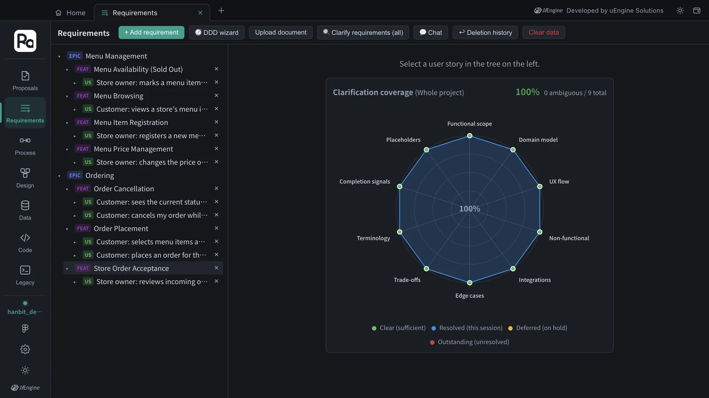
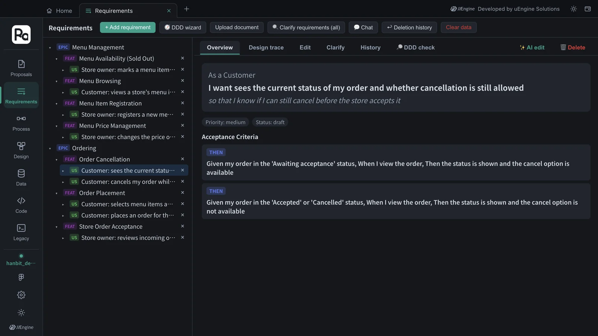
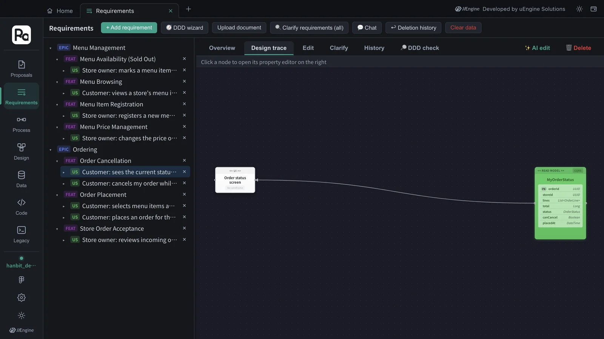
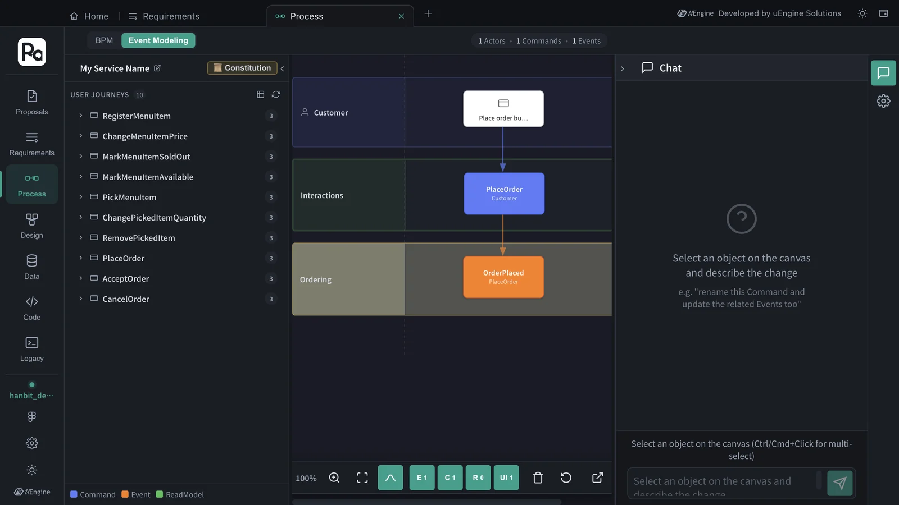
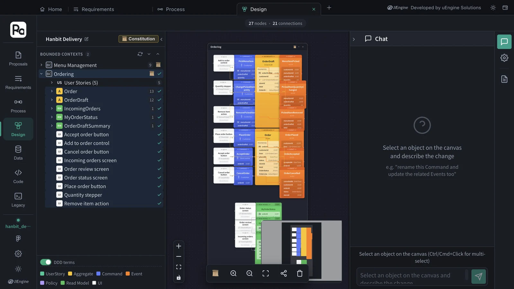
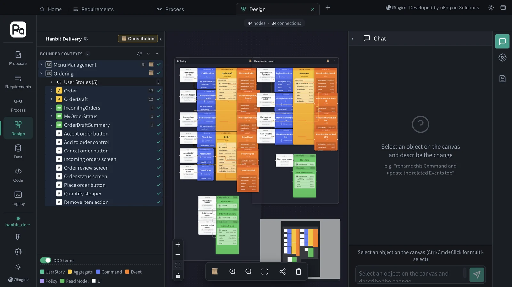
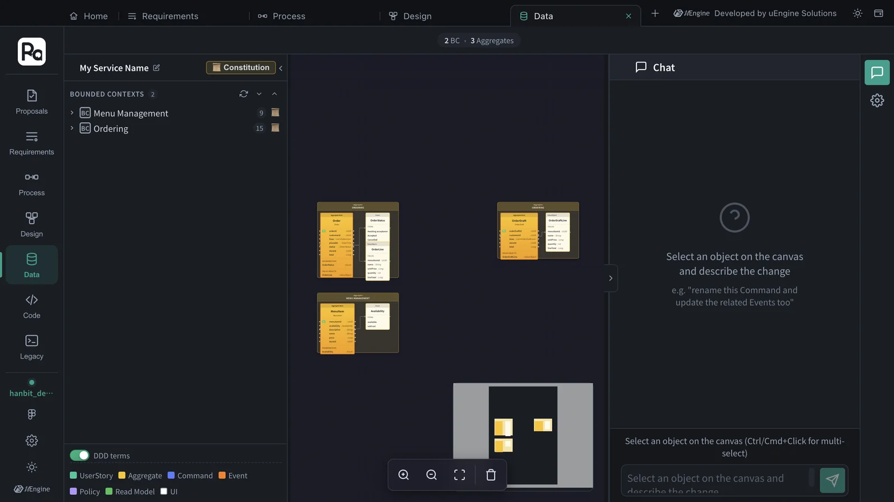

The design of PRO-001, accepted in Chapter 7, now lives in the project graph. Look at the same graph four ways — Requirements (bounded context › feature › story › acceptance criteria), Process (Event Modeling), the design canvas (UI → command → aggregate → event) and Data (the aggregates' entities · value objects).
Four tabs, one graph#
| Tab | What you see | Unit |
|---|---|---|
| Requirements | Bounded context (EPIC) › feature (FEAT) › user story (US) › acceptance criteria | Business language |
| Process | BPM, Event Modeling — who clicks what, and what happens | Flow |
| Design | UI · commands · aggregates · events · read models inside each bounded context | DDD building blocks |
| Data | The aggregates' root entities · value objects · enumerations | Data structure |
Open each tab once from Home and switch between them (Chapter 2). A change made in one tab is written to the graph, so it shows in the other tabs as well.
Hands-on 1 — Requirements#
- Open the Requirements tab. The tree on the left has the EPICs Menu Management and Ordering — the bounded contexts created when you accepted in Chapter 7.
- Click ▸ to the left of an EPIC to expand it, and expand the features (FEAT) too. Clicking the row itself opens that item's details instead of expanding it. Menu Management has four features and Ordering three, with nine user stories in all.
- Clarification coverage on the right shows how clear the requirements are from ten angles (functional scope · domain model · UX flow · non-functional · integrations · edge cases · trade-offs · terminology · completion signals · placeholders). This project was at 100% (0 ambiguous out of 9).

- Under Ordering › Order Cancellation, click the story “Customer: sees the current status of my order and whether cancellation is still allowed”. Overview shows As a · I want · so that and the acceptance criteria (Given · When · Then) — two for this story.
- Click Design trace to see, in one line, where this story leads in the design — Order status screen (UI) → MyOrderStatus (read model). This story only reads, so it ends at a read model. A story that changes something runs screen → command → aggregate → event instead; you'll see Place order button → PlaceOrder → Order → OrderPlaced on the design canvas in Hands-on 3. Click a node to open its property editor on the right.


Get to know the other toolbar buttons too — + Add requirement, 🧭 DDD wizard, Upload document (needs a key, Chapter 12), 🔍 Clarify requirements (all), 💬 Chat (edit by describing the change), ↩︎ Deletion history (restore deleted items), Clear data (deletes this project's requirements — check before you click).
Hands-on 2 — Process#
- Open the Process tab. At the top is a BPM / Event Modeling switch. BPM is filled when there are processes made by uploading a requirements document (the document-upload path in Chapter 12). A design made from a proposal is viewed in Event Modeling.
- Click Event Modeling. USER JOURNEYS on the left has 10 journeys, one per command (RegisterMenuItem … CancelOrder).
- Drag PlaceOrder onto the canvas. Each row (lane) shows who (Customer), what (Place order button → PlaceOrder), and what happens in which context (Ordering: OrderPlaced).

The E · C · R · UI buttons at the bottom toggle events · commands · read models · screens on and off.
Hands-on 3 — The design canvas#
- Open the Design tab. Click the service name at the top left (“My Service Name” at first) and change it to Hanbit Delivery.
- Click Ordering under BOUNDED CONTEXTS once to expand it — User Stories (5), the aggregates Order · OrderDraft, the read models IncomingOrders · MyOrderStatus · OrderDraftSummary, and nine screens.
- Double-click Ordering to put the whole context on the canvas (27 nodes · 21 connections). Screens (white) → commands (blue) → aggregates (yellow) → events (orange), with read models (green) below. OrderDraft takes the customer's picks (PickMenuItem · ChangePickedItemQuantity · RemovePickedItem), and Order takes PlaceOrder · AcceptOrder · CancelOrder.
- Double-click Menu Management to add it too. This design has 44 nodes and 34 connections.


- Click a node and it becomes the target in the Chat on the right, where you can edit it in words, e.g. “rename this command and update the related events too” (needs an OpenAI key). The change is written to the graph right away — to change the code as well, it's safer to go through a proposal (Chapter 9).
- Turn off the DDD terms toggle at the bottom left to switch to developer terms.
Hands-on 4 — Data#
- Open the Data tab.
- Drag Ordering and Menu Management from BOUNDED CONTEXTS onto the canvas. “2 BC · 3 Aggregates” appears at the top, and the root entities, value objects and enumerations of Order · OrderDraft · MenuItem are drawn — for example Order with the enumeration OrderStatus (Awaiting acceptance · Accepted · Cancelled) and the value object OrderLine.

How is this different from the data schema in Chapter 11?
The Data tab shows the data structure of the aggregates you designed. Legacy › Data schema in Chapter 11 shows the tables of a real DB you connected. Looking at the two side by side and matching old tables to new aggregates is where legacy modernization starts.
What to check#
- In the Requirements tab you expanded EPIC › FEAT › US and opened a story's design trace.
- You put the PlaceOrder journey on the Event Modeling canvas.
- You put the Ordering · Menu Management contexts on the design canvas (44 nodes · 34 connections) and saw the UI → command → aggregate → event flow.
- You put the Order · OrderDraft · MenuItem aggregates on the Data tab.
Quiz#
- Where can you see at a glance which screens · commands · aggregates · events · read models the story “Customer: sees the current status of my order and whether cancellation is still allowed” leads to?
- BPM in the Process tab is empty. Is it broken?
- You renamed a command through the Chat on the design canvas. Does the code that is already implemented change too?
Answers
- Open that story in the Requirements tab and click Design trace. Order status screen → MyOrderStatus is shown in one line.
- No. BPM is filled when there are processes made by uploading a requirements document. A design made from a proposal is viewed in Event Modeling.
- No. The Chat edits only the graph (the design). To bring the code in line too, make the change a proposal and take it through implementation · validation · acceptance (Chapter 9).